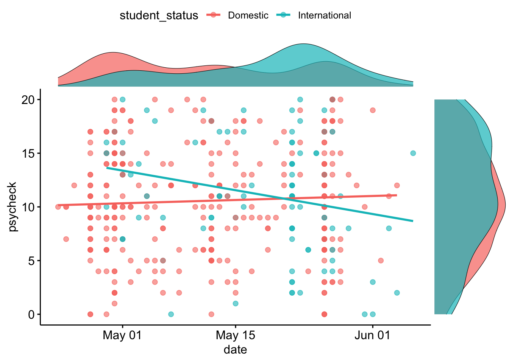

Last updated: 2020-07-02
Checks: 6 1
Knit directory: covid_music/
This reproducible R Markdown analysis was created with workflowr (version 1.6.2). The Checks tab describes the reproducibility checks that were applied when the results were created. The Past versions tab lists the development history.
The R Markdown is untracked by Git. To know which version of the R Markdown file created these results, you’ll want to first commit it to the Git repo. If you’re still working on the analysis, you can ignore this warning. When you’re finished, you can run wflow_publish to commit the R Markdown file and build the HTML.
Great job! The global environment was empty. Objects defined in the global environment can affect the analysis in your R Markdown file in unknown ways. For reproduciblity it’s best to always run the code in an empty environment.
The command set.seed(20200701) was run prior to running the code in the R Markdown file. Setting a seed ensures that any results that rely on randomness, e.g. subsampling or permutations, are reproducible.
Great job! Recording the operating system, R version, and package versions is critical for reproducibility.
Nice! There were no cached chunks for this analysis, so you can be confident that you successfully produced the results during this run.
Great job! Using relative paths to the files within your workflowr project makes it easier to run your code on other machines.
Great! You are using Git for version control. Tracking code development and connecting the code version to the results is critical for reproducibility.
The results in this page were generated with repository version b1c22dc. See the Past versions tab to see a history of the changes made to the R Markdown and HTML files.
Note that you need to be careful to ensure that all relevant files for the analysis have been committed to Git prior to generating the results (you can use wflow_publish or wflow_git_commit). workflowr only checks the R Markdown file, but you know if there are other scripts or data files that it depends on. Below is the status of the Git repository when the results were generated:
Ignored files:
Ignored: .RData
Ignored: .Rhistory
Ignored: .Rproj.user/
Untracked files:
Untracked: analysis/analyse_surveys.rmd
Untracked: analysis/describe_data.rmd
Untracked: data/adequately_sampled.rds
Untracked: data/covid_music_scored_vars.rds
Untracked: data/reduced_international_student_survey.rds
Unstaged changes:
Modified: analysis/_site.yml
Modified: analysis/index.Rmd
Modified: clean_data.R
Modified: explore_data.Rmd
Modified: reduced_international_student_survey.csv
Modified: reduced_international_student_survey.rds
Note that any generated files, e.g. HTML, png, CSS, etc., are not included in this status report because it is ok for generated content to have uncommitted changes.
There are no past versions. Publish this analysis with wflow_publish() to start tracking its development.
knitr::opts_chunk$set(message = FALSE,
warning = FALSE,
error = FALSE)This data has come from a larger survey, however we are interested in specific variables relating to music use and COVID related wellbeing. We are also interested in how these variables and relationships between them differ according to whether participants are domestic or international students at a major Australian Uninversity.
data <- read_rds(
"data/covid_music_scored_vars.rds"
)We can see from below that there is a problem with missing data
naniar::vis_miss(data)The plot below indicates that missingness is largely equal between international and domestic students. Further a t-test indicates no difference in the proportion of missingness between student groups, such that there was a higher mean for international than domestic students
data %>%
ggplot2::ggplot(
aes(x = prop_miss_all,
color = student_status,
fill = student_status)
) +
facet_wrap(vars(student_status),
nrow = 2) +
ggplot2::geom_histogram(aes(y = ..density..)) +
geom_density(alpha = .2) +
theme_classic() +
xlim(0, 1)data <- data %>%
mutate(
student_status = student_status,
adequate = if_else(prop_miss_all < .5,
TRUE,
FALSE)
)If we consider adequate sampling of participants we can see that there is an equal number of missing cases for domestic and international students, despite there being far more domestic students.
data %>%
ggplot2::ggplot(aes(
y = adequate,
fill = student_status,
group = student_status
)) +
geom_bar(position = "dodge") We will delete all cases where missingness is over 50% of variables resulting 92 participants being removed.
data_adequate <- data %>%
filter(adequate == TRUE)
write_rds(data_adequate,
"data/adequately_sampled.rds")cat_vars <- arsenal::tableby(
student_status ~ .,
data = select(data,
student_status,
gender,
age,
enrolment_school,
current_circumstance)
)
cat_labs <- list(
gender = "Gender",
age = "Age",
enrolement_school = "School",
current_circumstances = "COVID circumstances"
)
summary(cat_vars,
labelTranslations = cat_labs)| Domestic (N=334) | International (N=131) | Total (N=465) | p value | |
|---|---|---|---|---|
| Gender | 0.935 | |||
| N-Miss | 0 | 1 | 1 | |
| Male | 88 (26.3%) | 36 (27.7%) | 124 (26.7%) | |
| Female | 244 (73.1%) | 93 (71.5%) | 337 (72.6%) | |
| Prefer not to say | 2 (0.6%) | 1 (0.8%) | 3 (0.6%) | |
| Age | < 0.001 | |||
| N-Miss | 2 | 5 | 7 | |
| Mean (SD) | 19.081 (3.955) | 21.056 (4.911) | 19.624 (4.325) | |
| Range | 17.000 - 51.000 | 17.000 - 68.000 | 17.000 - 68.000 | |
| enrolment_school | < 0.001 | |||
| N-Miss | 1 | 1 | 2 | |
| Business | 81 (24.3%) | 34 (26.2%) | 115 (24.8%) | |
| Pharmacy | 5 (1.5%) | 0 (0.0%) | 5 (1.1%) | |
| Psychology | 80 (24.0%) | 64 (49.2%) | 144 (31.1%) | |
| ICTE | 4 (1.2%) | 3 (2.3%) | 7 (1.5%) | |
| Other, please write below | 163 (48.9%) | 29 (22.3%) | 192 (41.5%) | |
| current_circumstance | ||||
| N-Miss | 7 | 10 | 17 | |
| In self-isolation because you have been infected | 0 (0.0%) | 0 (0.0%) | 0 (0.0%) | |
| In self-isolation because you have been in close contact with a confirmed case | 0 (0.0%) | 1 (0.8%) | 1 (0.2%) | |
| Feeling sick or showing symptoms of coronavirus | 0 (0.0%) | 1 (0.8%) | 1 (0.2%) | |
| Staying at home for study/work | 252 (77.1%) | 109 (90.1%) | 361 (80.6%) | |
| Still going out for study/work | 48 (14.7%) | 5 (4.1%) | 53 (11.8%) | |
| Other, please specify | 27 (8.3%) | 5 (4.1%) | 32 (7.1%) |
We can also see that international students tended to compete the survey later in the semester
data_adequate %>%
ggplot(
aes(
x = date,
color = student_status,
fill = student_status
)
) +
geom_density(alpha = .6) +
theme_classic()measures_describe <- arsenal::tableby(
student_status ~ .,
data = select(data,
student_status,
covid_stress,
emotional_response,
wellbeing,
psycheck)
)
my_labels <- list(
student_status = "Enrolment Status",
covid_stress = "COVID related stress",
emotional_response = "Emotional response to COVID",
wellbeing = "W-E wellbeing scale",
psychech = "PsyCheck"
)
summary(measures_describe,
labelTranslations = my_labels)| Domestic (N=334) | International (N=131) | Total (N=465) | p value | |
|---|---|---|---|---|
| COVID related stress | < 0.001 | |||
| N-Miss | 22 | 25 | 47 | |
| Mean (SD) | 40.426 (9.372) | 44.991 (8.873) | 41.584 (9.449) | |
| Range | 13.000 - 63.000 | 13.000 - 65.000 | 13.000 - 65.000 | |
| Emotional response to COVID | 0.380 | |||
| N-Miss | 30 | 28 | 58 | |
| Mean (SD) | 51.477 (12.487) | 52.748 (13.290) | 51.799 (12.690) | |
| Range | 22.000 - 85.000 | 21.000 - 90.000 | 21.000 - 90.000 | |
| W-E wellbeing scale | 0.364 | |||
| N-Miss | 39 | 37 | 76 | |
| Mean (SD) | 20.732 (4.185) | 21.202 (4.889) | 20.846 (4.364) | |
| Range | 7.000 - 35.000 | 7.000 - 35.000 | 7.000 - 35.000 | |
| psycheck | 0.337 | |||
| N-Miss | 39 | 38 | 77 | |
| Mean (SD) | 10.559 (5.064) | 11.151 (5.499) | 10.701 (5.171) | |
| Range | 0.000 - 20.000 | 0.000 - 20.000 | 0.000 - 20.000 |
coping_describe <- arsenal::tableby(
student_status ~ .,
data = sjlabelled::remove_all_labels(
select(
data,
student_status,
exercise:internet)
)
)
summary(coping_describe)| Domestic (N=334) | International (N=131) | Total (N=465) | p value | |
|---|---|---|---|---|
| exercise | 0.008 | |||
| N-Miss | 31 | 32 | 63 | |
| Mean (SD) | 4.304 (1.553) | 3.828 (1.539) | 4.187 (1.561) | |
| Range | 1.000 - 6.000 | 1.000 - 6.000 | 1.000 - 6.000 | |
| music | 0.248 | |||
| N-Miss | 31 | 32 | 63 | |
| Mean (SD) | 4.789 (1.043) | 4.636 (1.388) | 4.751 (1.138) | |
| Range | 1.000 - 6.000 | 1.000 - 6.000 | 1.000 - 6.000 | |
| chores | 0.511 | |||
| N-Miss | 31 | 32 | 63 | |
| Mean (SD) | 3.660 (1.428) | 3.768 (1.361) | 3.687 (1.411) | |
| Range | 1.000 - 6.000 | 1.000 - 6.000 | 1.000 - 6.000 | |
| sleep | 0.222 | |||
| N-Miss | 31 | 32 | 63 | |
| Mean (SD) | 4.267 (1.390) | 4.465 (1.409) | 4.316 (1.395) | |
| Range | 1.000 - 6.000 | 1.000 - 6.000 | 1.000 - 6.000 | |
| control_thoughts | 0.899 | |||
| N-Miss | 31 | 32 | 63 | |
| Mean (SD) | 3.525 (1.334) | 3.505 (1.380) | 3.520 (1.344) | |
| Range | 1.000 - 6.000 | 1.000 - 6.000 | 1.000 - 6.000 | |
| evalaute_situation | 0.616 | |||
| N-Miss | 32 | 32 | 64 | |
| Mean (SD) | 3.993 (1.299) | 4.071 (1.423) | 4.012 (1.329) | |
| Range | 1.000 - 6.000 | 1.000 - 6.000 | 1.000 - 6.000 | |
| perspective_taking | 0.480 | |||
| N-Miss | 32 | 32 | 64 | |
| Mean (SD) | 3.884 (1.394) | 4.000 (1.478) | 3.913 (1.414) | |
| Range | 1.000 - 6.000 | 1.000 - 6.000 | 1.000 - 6.000 | |
| avoid_thing | 0.812 | |||
| N-Miss | 32 | 33 | 65 | |
| Mean (SD) | 3.871 (1.324) | 3.908 (1.415) | 3.880 (1.345) | |
| Range | 1.000 - 6.000 | 1.000 - 6.000 | 1.000 - 6.000 | |
| alone | 0.879 | |||
| N-Miss | 32 | 32 | 64 | |
| Mean (SD) | 3.983 (1.343) | 3.960 (1.392) | 3.978 (1.354) | |
| Range | 1.000 - 6.000 | 1.000 - 6.000 | 1.000 - 6.000 | |
| relaxation_techniques | 0.093 | |||
| N-Miss | 32 | 32 | 64 | |
| Mean (SD) | 3.308 (1.731) | 3.636 (1.535) | 3.389 (1.689) | |
| Range | 1.000 - 6.000 | 1.000 - 6.000 | 1.000 - 6.000 | |
| stress_management | 0.012 | |||
| N-Miss | 32 | 33 | 65 | |
| Mean (SD) | 4.199 (1.523) | 3.755 (1.500) | 4.090 (1.527) | |
| Range | 1.000 - 6.000 | 1.000 - 6.000 | 1.000 - 6.000 | |
| religious_activity | < 0.001 | |||
| N-Miss | 32 | 32 | 64 | |
| Mean (SD) | 1.798 (1.495) | 2.525 (1.541) | 1.978 (1.537) | |
| Range | 1.000 - 6.000 | 1.000 - 6.000 | 1.000 - 6.000 | |
| change_location | 0.123 | |||
| N-Miss | 32 | 32 | 64 | |
| Mean (SD) | 3.993 (1.612) | 3.707 (1.567) | 3.923 (1.604) | |
| Range | 1.000 - 6.000 | 1.000 - 6.000 | 1.000 - 6.000 | |
| call_someone | < 0.001 | |||
| N-Miss | 32 | 32 | 64 | |
| Mean (SD) | 3.348 (1.820) | 4.323 (1.420) | 3.589 (1.778) | |
| Range | 1.000 - 6.000 | 1.000 - 6.000 | 1.000 - 6.000 | |
| internet | 0.258 | |||
| N-Miss | 32 | 32 | 64 | |
| Mean (SD) | 3.828 (1.457) | 4.020 (1.491) | 3.875 (1.466) | |
| Range | 1.000 - 6.000 | 1.000 - 6.000 | 1.000 - 6.000 |
mean_coping <- data_adequate %>%
select(
student_status,
exercise:call_someone
) %>%
group_by(student_status) %>%
summarise_if(is.numeric,
list(~ mean(., na.rm = TRUE))) %>%
pivot_longer(-student_status,
names_to = "activity",
values_to = "mean"
)
mean_coping %>%
ggplot(
aes(
x = reorder(activity, mean),
y = mean,
color = student_status,
fill = student_status,
group = student_status
)
) +
scale_x_discrete() +
geom_bar(stat = "identity",
width = .4,
position = position_dodge(width = .6)) +
theme_classic() +
theme(legend.position = "bottom") +
coord_flip() +
labs(
title = "Mean endorsement of coping strategies"
) +
xlab("Coping Activity")Here we present how the survey scores fluctuated over the data collection period
data_adequate %>%
ggpubr::ggscatterhist(
x = "date",
y = "covid_stress",
color = "student_status",
margin.params = list(fill = "student_status", color = "black", size = 0.2),
add = "reg.line",
alpha = .6
) data_adequate %>%
ggpubr::ggscatterhist(
x = "date",
y = "emotional_response",
color = "student_status",
margin.params = list(fill = "student_status", color = "black", size = 0.2),
add = "reg.line",
alpha = .6
) data_adequate %>%
ggpubr::ggscatterhist(
x = "date",
y = "wellbeing",
color = "student_status",
margin.params = list(fill = "student_status", color = "black", size = 0.2),
add = "reg.line",
alpha = .6
) data_adequate %>%
ggpubr::ggscatterhist(
x = "date",
y = "psycheck",
color = "student_status",
margin.params = list(fill = "student_status", color = "black", size = 0.2),
add = "reg.line",
alpha = .6
) 
data_adequate %>%
ggpubr::ggscatterhist(
x = "date",
y = "music",
color = "student_status",
margin.params = list(fill = "student_status", color = "black", size = 0.2),
add = "reg.line",
alpha = .6
)
sessionInfo()R version 3.6.3 (2020-02-29)
Platform: x86_64-apple-darwin15.6.0 (64-bit)
Running under: macOS Catalina 10.15.4
Matrix products: default
BLAS: /Library/Frameworks/R.framework/Versions/3.6/Resources/lib/libRblas.0.dylib
LAPACK: /Library/Frameworks/R.framework/Versions/3.6/Resources/lib/libRlapack.dylib
locale:
[1] en_AU.UTF-8/en_AU.UTF-8/en_AU.UTF-8/C/en_AU.UTF-8/en_AU.UTF-8
attached base packages:
[1] stats graphics grDevices utils datasets methods base
other attached packages:
[1] arsenal_3.4.0 kableExtra_1.1.0 naniar_0.5.0 ggpubr_0.2.5
[5] magrittr_1.5 forcats_0.5.0 stringr_1.4.0 dplyr_0.8.5
[9] purrr_0.3.4 readr_1.3.1 tidyr_1.0.2 tibble_3.0.0
[13] ggplot2_3.3.0 tidyverse_1.3.0 workflowr_1.6.2
loaded via a namespace (and not attached):
[1] httr_1.4.1 jsonlite_1.6.1 viridisLite_0.3.0 splines_3.6.3
[5] modelr_0.1.6 assertthat_0.2.1 highr_0.8 cellranger_1.1.0
[9] yaml_2.2.1 pillar_1.4.3 backports_1.1.5 lattice_0.20-38
[13] glue_1.3.2 visdat_0.5.3 digest_0.6.25 promises_1.1.0
[17] ggsignif_0.6.0 rvest_0.3.5 colorspace_1.4-1 cowplot_1.0.0
[21] htmltools_0.4.0 httpuv_1.5.2 Matrix_1.2-18 pkgconfig_2.0.3
[25] broom_0.5.5 haven_2.2.0 scales_1.1.0 webshot_0.5.2
[29] later_1.0.0 git2r_0.26.1 mgcv_1.8-31 generics_0.0.2
[33] farver_2.0.3 sjlabelled_1.1.3 ellipsis_0.3.0 withr_2.1.2
[37] cli_2.0.2 survival_3.1-8 crayon_1.3.4 readxl_1.3.1
[41] evaluate_0.14 fs_1.3.2 fansi_0.4.1 nlme_3.1-144
[45] xml2_1.2.5 MBESS_4.6.0 tools_3.6.3 hms_0.5.3
[49] lifecycle_0.2.0 munsell_0.5.0 reprex_0.3.0 compiler_3.6.3
[53] rlang_0.4.6 grid_3.6.3 rstudioapi_0.11 labeling_0.3
[57] rmarkdown_2.1 gtable_0.3.0 DBI_1.1.0 R6_2.4.1
[61] lubridate_1.7.4 knitr_1.28 apa_0.3.3 rprojroot_1.3-2
[65] insight_0.8.2 stringi_1.4.6 Rcpp_1.0.4 vctrs_0.2.4
[69] dbplyr_1.4.2 tidyselect_1.0.0 xfun_0.12